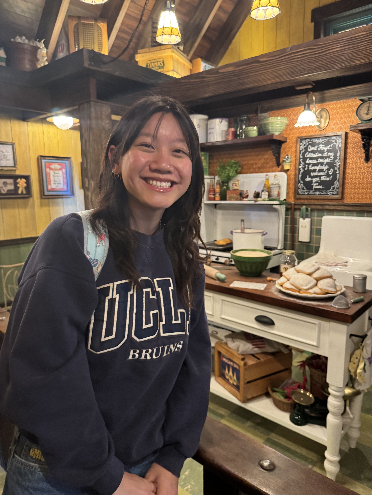

# about

Hi, I'm Belle.
I'm a junior at UPenn studying Computer Science with a Masters in Systems Engineering.
From robotics to machine learning and statistics, I love being curious about the intersection of problem-solving and human impact.
In my free time, you can find me snowboarding on the Penn Ski Team, exploring the outdoors, or locking in at AGH.
> interests
machine learning
software engineering
statistics
math
optimization
robotics
> links